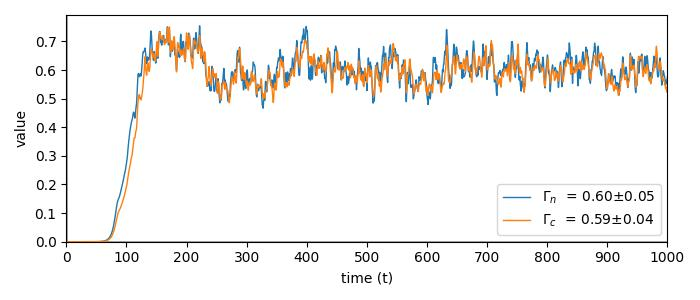

hw2d

The Hasegawa-Wakatani model of plasma turbulence


This repository contains a reference implementations for the Hasegawa-Wakatani model in two dimensions using Python. The purpose is to provide a playground for education and scientific purposes: be it testing numerical or machine learning methods, or building related models quicker, while improving the comparability of results.
Stable, verified parameters and values are published along with this repository.
Installation
Install a pure NumPy version via
pip install hw2d
and to include accelerators (currently supporting: numba), use the following:
pip install hw2d[accelerators]
Usage
Running python -m hw2d will let you run a hw2d simulation. It exposes the CLI Interface of the code located in src/hw2d/run.py with all parameters available there. Simply run python -m hw2d --help to get a full rundown of all available parameters along with their explanations.
If accelerators like numba are installed, these will be used automatically. To manually decide which function should be run with which accelerator, simply change the imports in srd/hw2d/model.py to select the appropriate function. Default uses Numba for periodic gradients and the arakawa scheme, and to be extended in the future.
Example Usage
Example of running a fully converged turbulent simulation:
python -m hw2d --step_size=0.025 --end_time=1000 --grid_pts=512 --c1=1.0 --k0=0.15 --N=3 --nu=5.0e-08 --snaps=1 --buffer_size=100 --output_path="test.h5" --movie=1 --min_fps=10 --speed=5 --debug=0
The code will run a grid of 512x512 in steps of 0.025 from 0 to 1000 for an adiabatic coefficient of 1.0 and hyperdiffusion of order 3 with a coefficient of 5.0e-08. The resulting data will be saved after every 1 frame and written in batches of 100 into file test.h5. This file will then be turned into a movie with at least 10 frames per second, running at 5t per second. The entire process will use no debugging.
Full documentation is available at: https://the-rccg.github.io/hw2d/
Reference Methods
The implementation presented here is by no means meant to be the optimal, but an easy to understand starting point to build bigger things upon and serve as a reference for other work. This reference implementation uses:
- Gradients $\left(\partial_x, \partial_y, \nabla \right)$: Central finite difference schemes (2nd order accurate)
- Poisson Bracket $\left([\cdot, \cdot]\right)$: Arakawa Scheme (2nd order accurate, higher order preserving)
- Poisson Solver $\left(\nabla^{-2}\cdot\right)$: Fourier based solver
- Time Integration $\left(\partial_t\right)$: Explicit Runge Kutte (4th order accurate)
The framework presented here can be easily extended to use alternative implementations.
Contributions encouraged
Pull requests are strongly encouraged.
The simplest way to contribute is running simulations and committing the results to the historical runs archive. This helps in exploring the hyper-parameter space and improving statistical reference values for all.
If you don't know where to start in contributing code, implementing new numerical methods or alternative accelerators make for good first projects!
Code guidelines
All commits are auto-formatted using Black to keep a uniform presentation.
The Hasegawa-Wakatani Model
The HW model describes drift-wave turbulence using two physical fields: the density $n$ and the potential $\phi$ using various gradients on these.
$$ \begin{align} \partial_t n &= c_1 \left( \phi - n \right) - \left[ \phi, n \right] - \kappa_n \partial_y \phi - \nu \nabla^{2N} n \\ \partial_t \Omega &= c_1 \left( \phi - n \right) - \left[ \phi, \Omega \right] - \nu \nabla^{2N} \Omega \\ \Omega &= \nabla^2 \phi \end{align} $$
https://github.com/the-rccg/hw2d/assets/28964733/30d40e53-72a9-49b5-9bc5-87dc3f10a076
Dynamics of the different phases
The model produces self-organizing turbulent structures in a three distinct stages: initial self-organization, linear drift waves, and a stable turbulent phase.
For the interesting intermediary phase for the adiabatic coefficient, c1=1, the initial perturbation will start organizing to produce linear drift waves through the $\partial_t \phi$ component.
The system transitions into this first linear phase at roughly t=15, saturates at around t=45, and breaks down to transition into the turbulent phase at about t=80.
The turbulent phase is visually saturated at around t=125, but physical parameters overshoot and only fall into the long term stable phase at aroung t=200.
Physical Properties
Numerical values for each frame
The reason why the Hasegawa-Wakatani Model has been the de-facto testing bed for new methods are its statistically stationary properties of the complex turbulent system. The moduel includes all code needed to generate these values. It goes further, however, and provides reference values along with statistical bounds for the first time for a vast range of values. This allows simple comparison, as well es evalutaion of new methods to one reference community built resource.
$$
\begin{align}
\Gamma^n &= - \iint{ \mathrm{d}^2x \space \left( n \space \partial_y \phi \right) } \\
\Gamma^c &= c_1 \iint{ \mathrm{d}^2x \space \left(n - \phi \right)^2} \\
E &= \small \frac{1}{2} \normalsize \iint{\mathrm{d}^2 x \space \left(n^2 - \left|\nabla_\bot \phi \right|^2 \right)} \\
U &= \small \frac{1}{2} \normalsize \iint{\mathrm{d}^2 x \space \left(n-\nabla_\bot^2 \phi\right)^2} = \small \frac{1}{2} \normalsize \iint{\mathrm{d}^2 x \space \left(n-\Omega\right)^2}
\end{align}
$$
Spectral values for each frame
Additionally, some spectral properties are included for more detailed analysis beyond the scalar factors, among these are:
$$
\begin{align}
\Gamma^n \small (k_y) \normalsize &= - i k_y \space n \small (k_y) \normalsize \space \phi^* \small (k_y) \normalsize \\
\delta \small (k_y) \normalsize &= - \mathrm{Im}\left( \mathrm{log} \left( n^* \small (k_y) \normalsize \space \phi \small (k_y) \normalsize \right) \right) \\
E^N \small (k_y) \normalsize &= \small \frac{1}{2}\normalsize \big| n \small (k_y) \normalsize \big|^2 \\
E^V \small (k_y) \normalsize &= \small \frac{1}{2}\normalsize \big| k_y \space \phi \small (k_y) \normalsize \big|^2
\end{align}
$$
Predictable in- and outflows over time
Finally, due to the definition of the fields as perturbation fields with background desnity gradients, the system gains and loses energy and enstrophy in a predictable manner over time. The conservation of these are also tested within the continuous integration pipeline. The definitions are given by:
$$
\begin{align}
\partial_t E &= \Gamma^N - \Gamma ^c - \mathfrak{D}^E \\
\partial_t U &= \Gamma^N - \mathfrak{D}^U \\
\mathfrak{D}^E &= \quad \iint{ \mathrm{d}^2x \space (n \mathfrak{D^n} - \phi \mathfrak{D}^\phi)} \\
\mathfrak{D}^U &= - \iint{ \mathrm{d}^2x \space (n - \Omega)(\mathfrak{D}^n - \mathfrak{D}^\phi)} \\
with \quad \mathfrak{D}^n \small (x,y) \normalsize &= \nu \nabla^{2N} n \quad and \quad
\mathfrak{D}^\phi \small (x,y) \normalsize = \nu \nabla^{2N} \phi
\end{align}
$$
General notes
It is the common practice across all reference texts to calculate $\int\cdot$ as $\langle \cdot \rangle$ for a unitless box of size one in order to get comparable values for all properties.
Common Issues in Simulating HW2D
Crashing/NaN encountered
within < 10 timesteps
The simulation has exploded in one direction. Most commonly this means that the hyper-diffusion components are too large.
- reduce the hyper diffusion order:
N - reduce the diffusion coefficient:
nu - reduce the initial perturbation:
scale
around t=75-125
The timestep is too big in the turbulent phase. CFL criteria are no longer satisfied and simulation crashes.
- reduce:
step_size
Chessboard pattern emerges
The energy accumulates at grid scale. Hyper-diffusion component is not large enough to dissipate the energy.
- increase:
nu - increase:
N
Physical values deviate from references
The HW2D model can create stable simulations that are underresolved, through very large hyper-diffusion terms. A higher resolution is needed for this box size.
- increase:
grid_pts
If the esntrophy goes way above reference values, however, it can mean that the hyper-diffusion is too small.
- increase:
nu
References
The region between the adiabatic and hydrodynamic limit is defined at c_1=1. For this dynamic and a box size of k0=0.15, a minimum grid size of 512x512 is needed at a dt=0.025. To generate a stable simulation with hyperdiffusion (N=3) requires a value of nu=5e-08.
Reference Step Sizes
Minimum step sizes for the system can be evaluated by setting hyperdiffusion to zero N=0 and nu=0 and running to about age=200 to reach into the turbulent steady-state regime.
| integrator | c1 |
Box Size | grid_pts |
min dt |
|---|---|---|---|---|
| rk4 | 1.0 | 0.15 | 1024x1024 | 0.025 |
| rk4 | 1.0 | 0.15 | 512x512 | 0.025 |
| rk4 | 1.0 | 0.15 | 256x256 | 0.05 |
| rk4 | 1.0 | 0.15 | 128x128 | 0.05 |
| rk4 | 1.0 | 0.15 | 64x64 | 0.05 |
| rk4 | 1.0 | 0.15 | 32x32 | 0.05 |
Reference Timetraces
Sample traces are given for 512x512, dt=0.05, c1=1, N=3, and nu=5e-08. Note that the statistical nature does mean single simulations can deviate for quite some time from the statistical mean.


Reference Values
Reference values are averaged over 25 runs starting from well within the turbulent steady-state t=300 with the standard deviation across the simulations denoted by $\pm$.
Each run to t=1,000 at 512x512 and dt=0.025 requires roughly 125GB (3 million floats/frame for 3 fields over 40,000 frames per simulation), meaning the summary contains information for 10TB of data. This does not include the hypterparameter stabilization tests.
As a result, it is practically unfeasible to supply this data.
| Metric | HW2D Data | Stegmeir | Camargo | HW | Zeiler |
|---|---|---|---|---|---|
| ** | 512x512 | Stegmeir et al. | Camarco et al. | In Stegmeir | Zeiler et al. |
| $\Gamma_n$ | $0.60 \pm 0.01$ | $0.64$ | $0.73$ | $0.61$ | $0.8$ |
| $\delta\Gamma_n$ | $0.05 \pm 0.01$ | $n/a$ | $n/a$ | $n/a$ | $n/a$ |
| $\Gamma_c$ | $0.60 \pm 0.01$ | $n/a$ | $0.72$ | $n/a$ | $n/a$ |
| $\delta\Gamma_n$ | $0.03 \pm 0.01$ | $n/a$ | $n/a$ | $n/a$ | $n/a$ |
| $E$ | $3.78 \pm 0.07$ | $3.97$ | $4.4$ | $3.82$ | $6.1$ |
| $\delta E$ | $0.29 \pm 0.03$ | $0.26$ | $0.16$ | $0.26$ | $0.51$ |
| $U$ | $13.2 \pm 0.91$ | $n/a$ | $12.8$ | $n/a$ | $n/a$ |
| $\delta U$ | $0.68 \pm 0.08$ | $n/a$ | $1.66$ | $n/a$ | $n/a$ |